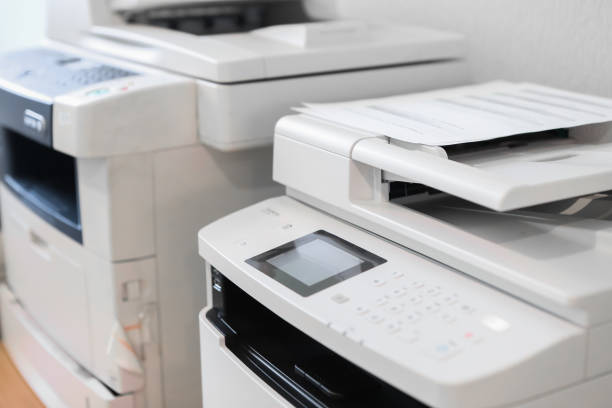
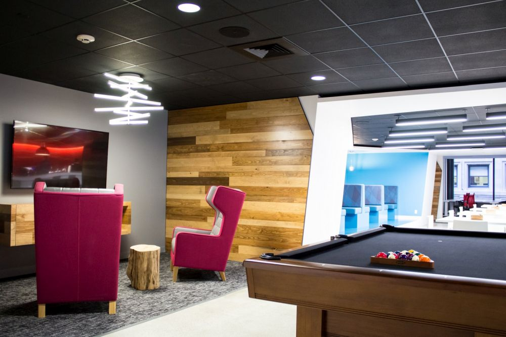
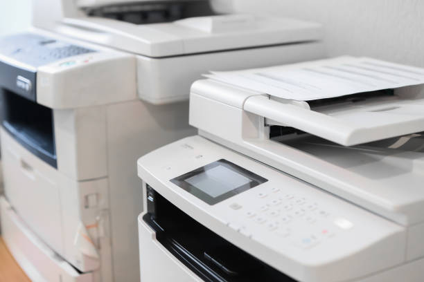
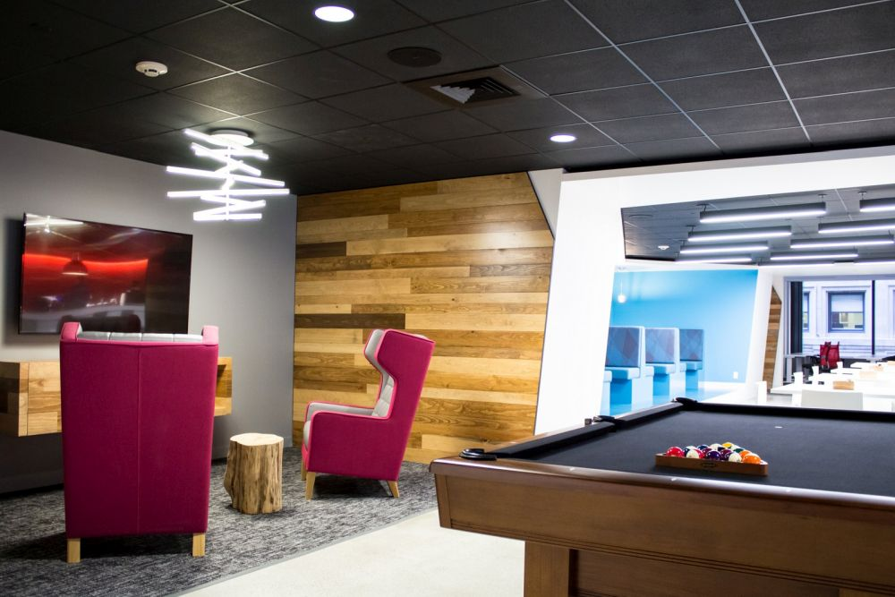

Passer for inviduelt arbeid, uformelle møter og prosjektsamarbeid.
Små fullmøblerte kontorer som kan brukes av enkeltpersoner eller smågrupper.
Det er totalt 6 kontorer.
Inkludert prosjektor og whiteboard for presentasjoner og møter.
Det er totalt 5 rom med ulike størrelser på rommene.
Komfortabelt sitteområde med sofa og
som passer bra for uformelle møter og avslapping.
Godt utstyrt kjøkken for matlaging.
Utstyr for printing og scanning av dokumenter.
Muligheten til spille biljard, bordtennis eller videospill
 



På USN Start finner du et flott område med mange fleksible sitteplasser med felles pulter, bord og stoler. Her kan du ha møter, samarbeide om prosjekter eller jobbe individuelt.
USN Start har 6 private kontorer, fullt møblerte kontorer
med plass til enkeltpersoner eller små team. Perfekt for
privatliv og en dedikert arbeidsplass.
USN Start har 5 møterom for presentasjoner, kundemøter eller teamdiskusjoner. Rommene er møterom i ulike størrelser, utstyrt med projektorer og tavler.
Oppholdsrommet har komfortable sofaer og stoler som skaper en avslappet atmosfære for uformelle møter eller avslappende stunder for deg og dine kollegaer.
USN Start har et velutstyrt kjøkken med mulighet for å tilberede måltider og tilbyr også gratis kaffe, te og snacks. Dette er fin mulighet til å bli kjent med nye medarbeidere.
USN Start har et utskrifts- og skanneområde der du
finner alt utstyr for utskrift, skanning og kopiering av
dokumenter.
Når du trenger en pause eller bare vil ha det gøy, kan
USN Start tilby et spillerom med spill som biljard,
bordtennis og videospill.